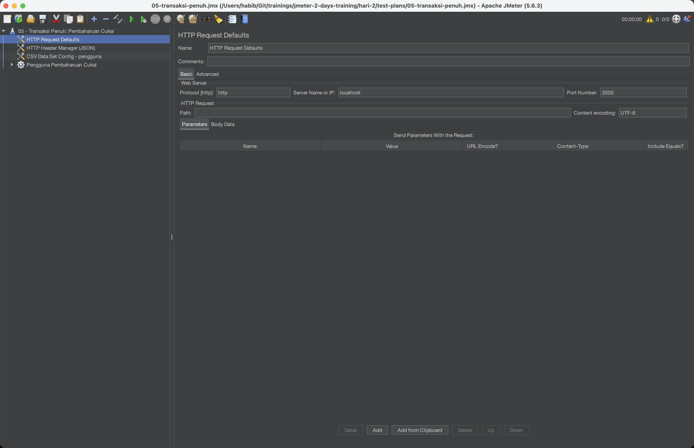
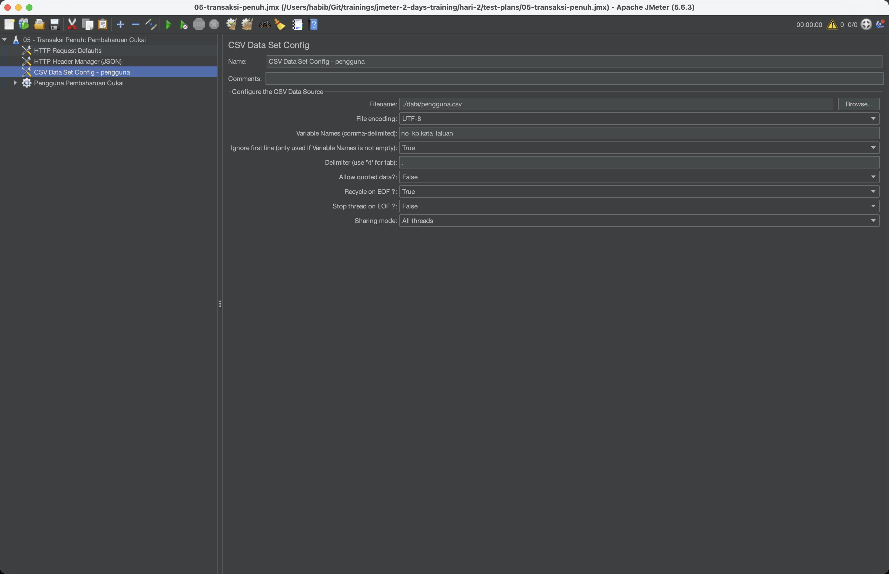
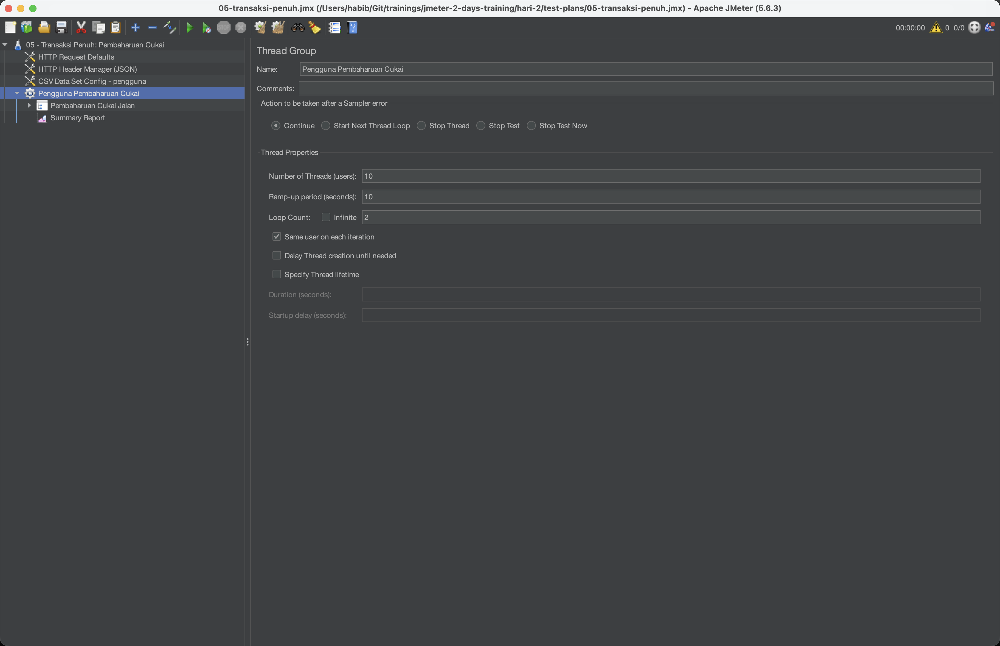
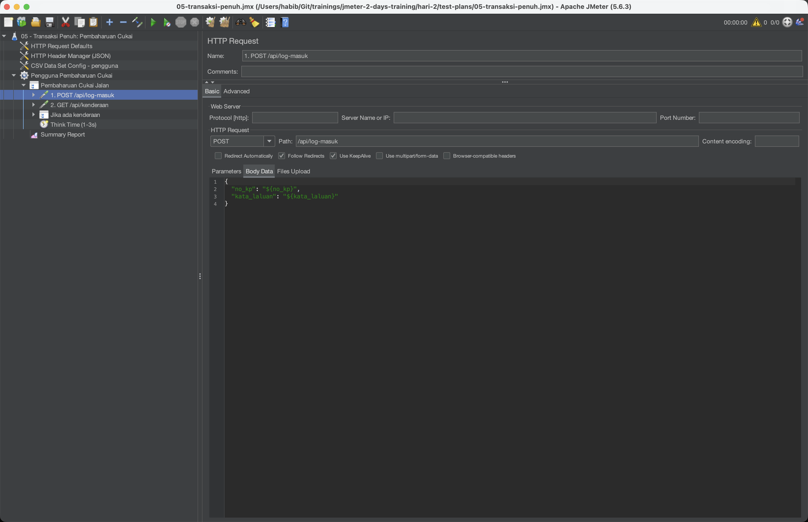
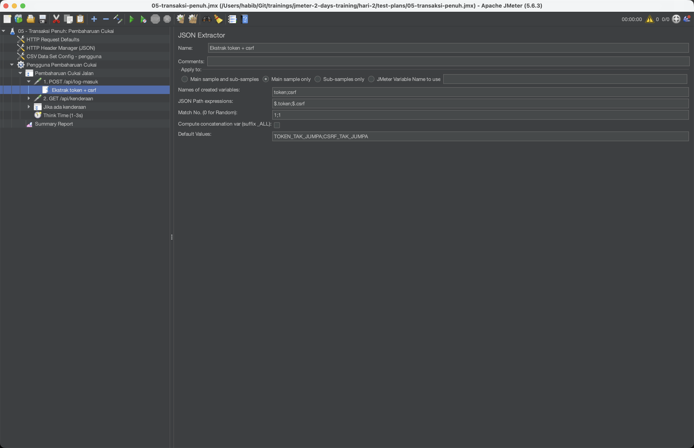
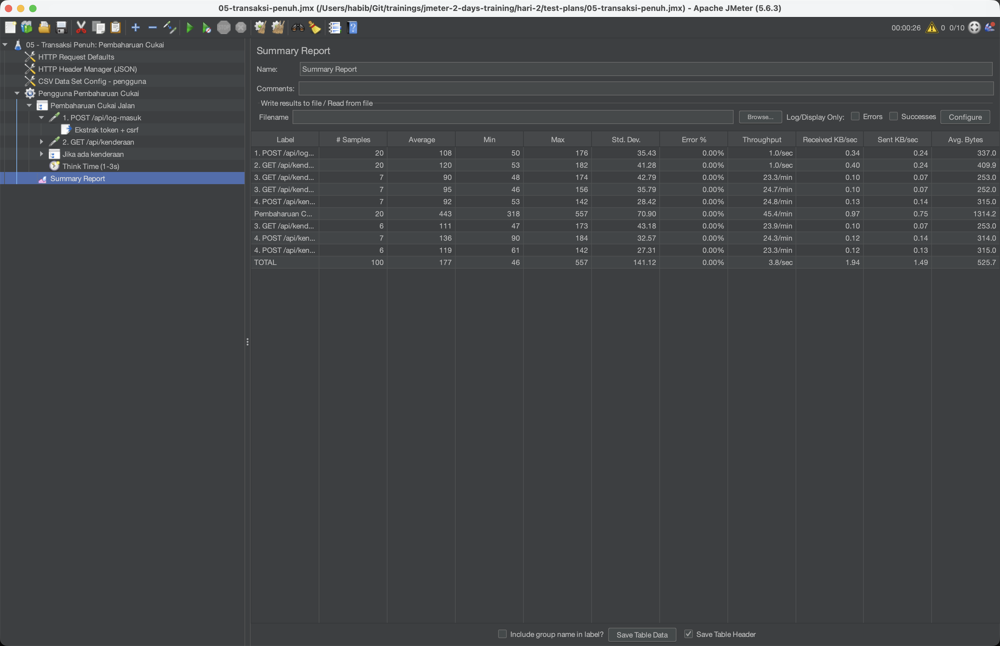

Program latihan amali 2 hari untuk pemula. Bina, jalankan, dan analisis satu ujian beban sebenar terhadap Portal eJPJ (tiruan) — daripada Test Plan pertama hingga laporan HTML non-GUI. Nota dalam Bahasa Melayu, istilah teknikal dalam Bahasa Inggeris.
Hari latihan
Masa kelas + lab
Test Plan sebenar (eJPJ tiruan)
| Blok masa | Fokus pengajar | Hasil peserta |
|---|---|---|
| 45 min | Konsep + gambaran aliran kerja JMeter | Faham objektif hari |
| 120 min | Demo berpandu dalam JMeter GUI | Test Plan yang berjalan |
| 60 min | Semak hasil & betulkan ralat biasa | Ujian disahkan (assertion hijau) |
| 90 min | Lab variasi + soal jawab | Perubahan sendiri + ulang kaji |
Pasang JMeter (perlu Java/JDK), fahami mod GUI vs non-GUI, anatomi Test Plan (Thread Group, Sampler, Config, Timer, Assertion, Listener), CSV Data Set Config, dan jalankan ujian beban pertama.
Correlation (token/csrf), Logic Controllers, JSR223 Groovy, larian non-GUI + laporan HTML, membaca percentile/throughput/error %, ujian teragih, dan integrasi CI/CD + monitoring.
Performance testing mengukur sejauh mana sistem laju, stabil, dan boleh berskala apabila banyak pengguna mengaksesnya serentak.
Ia bukan mencari bug fungsi, tetapi bottleneck: response time perlahan, throughput menurun, error % naik, memori/CPU tepu.
Beban dijangka (normal/puncak). Sahkan SLA dipenuhi.
Tolak melebihi had sehingga patah. Cari titik pecah.
Lonjakan mendadak pengguna. Pulih semula?
Beban sederhana masa panjang. Cari memory leak.
Tambah beban/nod berperingkat. Ukur skala.
Load testing ialah satu kategori performance testing yang menentukan prestasi sistem mengikut keadaan dunia sebenar.
Ia mengesahkan infrastruktur sedia ada mencukupi, mengukur beban maksimum yang boleh diurus, dan menentukan kapasiti pengguna serentak (max operating capacity).
Open-source, Java. Fokus kursus ini.
Komersial; skrip JavaScript.
Ujian beban API (SmartBear).
Enterprise (Micro Focus/OpenText).
Fokus automasi & CI (Tricentis).
Berasaskan awan; pelayar sebenar.
Apache JMeter ialah perisian open-source yang sepenuhnya berasaskan Java untuk menguji beban dan mengukur prestasi.
Ia menilai functional behavior di bawah beban. Asalnya dicipta untuk aplikasi web — skopnya kini merangkumi API, pangkalan data, FTP, JMS & banyak lagi.
Load, stress, spike, soak — satu alat.
Open-source, tiada kos lesen.
Berjalan di mana ada Java (Win/macOS/Linux).
Dokumentasi luas & ekosistem plugin.
Rakam trafik pelayar jadi Test Plan.
JSR223/Groovy, fungsi, plugin.
System Under Test (SUT) ialah aplikasi tiruan Portal eJPJ yang berjalan di mesin sendiri:
cd sut/
node server.js
# http://localhost:3000| Method | Path | Fungsi |
|---|---|---|
| POST | /api/log-masuk | Log masuk → pulang token + csrf |
| GET | /api/kenderaan?no_kp= | Senarai kenderaan ikut No. KP |
| GET | /api/kenderaan/:no/cukai | Semak status cukai kenderaan |
| POST | /api/kenderaan/:no/bayar-cukai | Bayar cukai (perlu csrf) |
| GET | /api/saman?no_kp= | Senarai saman ikut No. KP |
| POST | /api/saman/:id/bayar | Bayar saman |
Perhatikan: token & csrf adalah nilai dinamik daripada log masuk — kunci kepada pelajaran correlation di Hari 2.
Pasang JMeter, fahami anatomi Test Plan, konfigur Thread Group & HTTP Request, parameterize dengan CSV, dan jalankan ujian beban pertama terhadap eJPJ tiruan.
JMeter berjalan atas JVM. Pasang JDK 8+ (disyorkan 11/17). Sahkan: java -version.
Ambil apache-jmeter-x.y.zip dari jmeter.apache.org, nyahzip ke folder pilihan.
bin/jmeter (mac/Linux) atau bin/jmeter.bat (Windows).
Untuk membina & nyahpepijat Test Plan — tambah elemen, lihat View Results Tree, sahkan logik. Berat — jangan guna untuk beban sebenar.
Untuk beban sebenar. Guna sumber jauh lebih rendah, boleh hasilkan lebih ramai thread, sesuai untuk CI/CD & pelayan.
jmeter -n -t plan.jmx -l results.jtlTest Plan
└─ Thread Group (bilangan users, ramp-up, loop)
├─ HTTP Request Defaults (Config Element)
├─ HTTP Header Manager (Config Element)
├─ CSV Data Set Config (Config Element)
├─ HTTP Request (Sampler) — POST /api/log-masuk
├─ Constant Timer (Timer · think time)
├─ Response Assertion (Assertion)
├─ Regular Expression Extractor (Post-Processor)
└─ View Results Tree (Listener · debug)Kolam pengguna maya — punca semua beban.
Permintaan sebenar — cth HTTP Request.
Nilai lalai & data — Defaults, Header, CSV.
Jeda antara permintaan (think time).
Sahkan respons betul (lulus/gagal).
Kumpul & papar hasil.
Ubah permintaan sebelum hantar.
Ekstrak nilai dari respons (correlation).
Bilangan pengguna maya serentak. Cth 100 = 100 pengguna.
Masa (saat) untuk lancar semua thread. 100 thread / 50s = 2 thread/saat.
Berapa kali setiap thread ulang Sampler. Boleh set Infinite + jangka masa.
Letak Protocol/Server/Port sekali dalam Config Element ini — semua Sampler mewarisinya. Tukar server (staging↔local) di satu tempat sahaja.
{ "no_kp": "${no_kp}",
"kata_laluan": "rahsia123" }Tetapkan header semua permintaan — cth Content-Type: application/json, Authorization: Bearer ${token}.
Simpan & hantar cookie sesi automatik antara permintaan — perlu untuk aliran log masuk berasaskan sesi.
Tiru gelagat cache pelayar (304 Not Modified) supaya beban lebih realistik.
Nilai lalai host/port/protocol untuk semua Sampler — elak ulang.
Content-Type: application/json + X-CSRF-Token: ${csrf}; Cookie Manager kekalkan sesi log masuk.Setiap permintaan/respons penuh. Debug sahaja — sangat berat, matikan semasa beban.
Ringkasan agregat: sampel, purata, min/max, throughput, error %.
Tambah percentile (90/95/99) & median — lebih berguna untuk SLA.
.jtl + laporan HTML non-GUI.# pengguna.csv
no_pendaftaran,no_kp
WXY1234,880101015500
WABC88,900202025511
JKL4567,910303035522Set Filename = pengguna.csv, Variable Names = no_pendaftaran,no_kp. Setiap thread ambil baris berlainan.
Rujuk dalam Sampler: /api/kenderaan?no_kp=${no_kp}. Set Recycle on EOF & Sharing mode ikut keperluan.
Sahkan kandungan/kod respons. Cth: Response Code = 200, atau Text Response mengandungi "token". Gagal → sampel ditanda ralat.
Sahkan respons tiba dalam masa maksimum (cth < 2000 ms). Melebihi → ditanda gagal walaupun kod 200.
Jeda tetap (cth 1000 ms) antara setiap permintaan.
Jeda rawak seragam dalam julat — lebih semula jadi.
Jeda rawak taburan normal sekitar nilai purata.
Correlation nilai dinamik, Logic Controllers, JSR223 Groovy, larian non-GUI + laporan HTML, membaca percentile & error %, ujian teragih, dan integrasi CI/CD + monitoring.
Nilai seperti token & csrf dijana baharu setiap sesi. Jika kita "hardcode" nilai lama, pelayan menolak (401/403).
Correlation = ekstrak nilai dinamik daripada satu respons, simpan ke pemboleh ubah, dan guna semula dalam permintaan berikutnya.
token & csrf → guna dalam POST /api/kenderaan/:no/bayar-cukai.Untuk respons JSON. Guna JSONPath, cth $.token → simpan ke token.
Corak regex atas teks mentah, cth "csrf":"(.+?)" → group 1.
Tetapkan teks kiri & kanan nilai — mudah, tanpa regex rumit.
// JSON Extractor
JSON Path expressions: $.token → token
$.csrf → csrf
// Guna semula: Header X-CSRF-Token: ${csrf}
// Header Authorization: Bearer ${token}Kumpul beberapa Sampler jadi satu transaksi — ukur masa hujung-ke-hujung (cth "Bayar Cukai").
Jalankan anak elemen hanya jika syarat benar — cth ada saman belum bayar.
Ulang blok bilangan kali tetap dalam satu iterasi thread.
Kawal peratus pelaksanaan — cth 30% pengguna bayar saman.
Tulis logik tersuai dalam Groovy — jana data, ubah pemboleh ubah, kira tandatangan. Groovy paling laju & disyorkan.
// JSR223 PostProcessor (Groovy)
def body = prev.getResponseDataAsString()
def json = new groovy.json.JsonSlurper().parseText(body)
vars.put("token", json.token)${__Random(1,1000)} — nombor rawak${__UUID} — ID unik${__time(yyyy-MM-dd)} — cap masa${__P(threads,50)} — baca property CLI# Jalankan beban & jana laporan dashboard HTML
jmeter -n -t plan.jmx -l results.jtl -e -o report/
# -n mod non-GUI
# -t fail Test Plan (.jmx)
# -l fail hasil mentah (.jtl)
# -e jana laporan selepas ujian
# -o folder output laporan HTMLreport/index.html — dashboard interaktif: graf throughput, response time over time, percentile, dan taburan ralat. Guna property CLI: -Jthreads=200.| Metrik | Maksud | Kenapa penting |
|---|---|---|
| Throughput | Permintaan disempurnakan / saat | Kapasiti sistem |
| Average / Median | Purata vs nilai tengah masa tindak balas | Median tahan outlier |
| 90 / 95 / 99 %ile | 90% permintaan ≤ nilai ini | Pengalaman pengguna sebenar |
| Error % | Peratus sampel gagal | Kestabilan |
| Latency vs Response time | Masa ke byte pertama vs jumlah masa | Asingkan rangkaian vs proses |
Satu mesin sukar hasilkan beban sangat tinggi. Distributed testing agih thread ke beberapa nod slave, dikawal satu master.
Master kumpul hasil semua slave. Guna bila perlu ribuan pengguna maya melebihi had CPU/rangkaian satu mesin.
Jalankan JMeter non-GUI dalam Jenkins atau GitHub Actions pada setiap rilis. Gagalkan pipeline jika SLA dilanggar (error % / percentile ambang).
- run: jmeter -n -t plan.jmx \
-l out.jtl -e -o report/Backend Listener hantar metrik ke InfluxDB, dipapar langsung dalam Grafana semasa ujian berjalan — nampak throughput & ralat secara masa nyata.
| Peringkat | Alat / elemen | Hasil |
|---|---|---|
| Persediaan | Java + JMeter GUI | Persekitaran ujian sedia |
| Bina Test Plan | Thread Group + HTTP Request + Config | Ujian log masuk berfungsi |
| Data & sahihkan | CSV Data Set + Assertion + Timer | Ujian realistik & disahkan |
| Correlation | JSON/Regex/Boundary Extractor | token & csrf digunakan semula |
| Larian beban | Non-GUI (-n -e -o) | Laporan HTML dashboard |
| Analisis | Throughput · percentile · error % | Keputusan SLA/NFR |
Tangkapan skrin sebenar Apache JMeter 5.6 — daripada Test Plan hingga keputusan, menyasarkan mock Portal eJPJ di localhost:3000.






Daripada Test Plan pertama kepada laporan non-GUI yang boleh dibaca. Langkah seterusnya: integrasi penuh CI/CD, monitoring InfluxDB + Grafana, ujian teragih berskala, dan menetapkan SLA/NFR untuk setiap perkhidmatan.